2026.08.15 00:00 → 08.21 09:53 KST
AI가 답하던 주에서,
일을 맡기던 주로
속도 경쟁, 전용 컴퓨터 에이전트, 로컬 오픈 모델까지. 이번 주의 승부는 모델 점수 하나가 아니라 일을 끝내는 전체 시스템으로 이동했다.
이번 주의 경쟁축은 ‘더 똑똑함’에서 ‘더 맡길 수 있음’으로 이동했다
Gemini와 GPT-5.6은 지연을, Grok Bot은 전용 컴퓨터를, Qwen과 DeepSeek은 배포 스택을 전면에 놓았다. 모델이 실제 일을 맡으려면 속도·도구·자격증명·승인·감사가 하나의 제품이어야 한다.
가장 반복적으로 관측된 신호는 속도였다. Google의 Gemini 3.7 Flash는 1M 입력·64K 출력을, OpenAI의 GPT-5.6 Sol Ultrafast는 최대 750 token/s를 내세웠다. 그러나 이 숫자는 측정 하드웨어, 출력 길이, 제공 방식이 달라 한 줄 순위표로 만들 수 없다. 실제 제품에서는 모델 계산 외에도 네트워크·도구 호출·승인 대기가 작업 완료 시간을 결정한다.
두 번째 변화는 에이전트의 물리적 경계다. Grok Bot은 브라우저 탭 안의 채팅이 아니라 로그인된 앱을 가진 전용 클라우드 컴퓨터에서 오래 실행된다. 세 번째 변화는 배포의 재부상이다. Qwen 3.8 27B와 DeepSeek V4 Pro는 가중치만이 아니라 추론 모드, 컨텍스트, 양자화, 서빙 엔진을 함께 보아야 한다. ‘오픈’은 곧 ‘가볍다’거나 ‘운영이 쉽다’는 뜻이 아니다.
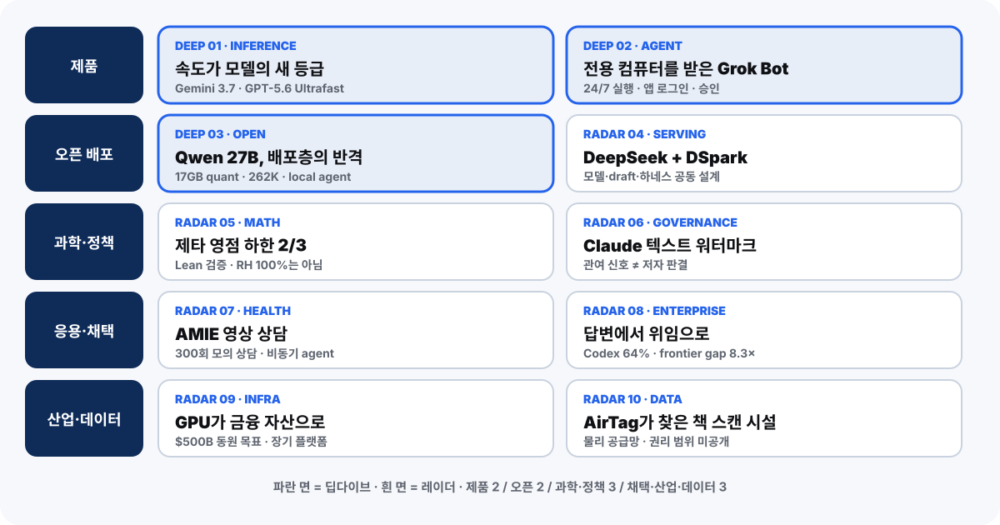
파란 카드는 딥다이브다. 인기도가 아니라 ‘일을 맡길 수 있는 시스템’이라는 논지에 기여하는 순서로 배치했다.| # | 신호 | 점수 | 이번 주에 남긴 질문 |
|---|---|---|---|
| 1 | Gemini 3.7 Flash · GPT-5.6 Ultrafast | 95 | token/s가 실제 완료시간을 얼마나 줄이나? |
| 2 | Grok Bot 전용 컴퓨터 | 94 | 로그인·결제·전송을 어디서 승인할까? |
| 3 | Qwen 3.8 27B | 93 | 오픈 가중치를 운영 가능한 스택으로 만들 수 있나? |
| 4–7 | DeepSeek · 제타 · 워터마크 · AMIE | 81–91 | 연구·서빙·출처의 조건은 무엇인가? |
| 8–10 | 기업 위임 · AI 금융 · 학습 데이터 | 76–86 | 가치·자본·권리의 공급망을 추적할 수 있나? |
고정 북마크가 아니라, 매주 영향력 지도를 다시 만든다
이번 호는 국내외 YouTube 6개 채널의 33개 영상, Hacker News 689개 후보, 공식·미디어·전문가·커뮤니티 채널을 한데 모은 뒤 같은 사건을 묶고 1차 출처로 되돌아갔다.
소스 레이더는 두 단계다. 먼저 안정적인 기준점—OpenAI, Anthropic, Google, xAI, NVIDIA, Hugging Face, 주요 연구자와 미디어—을 점검한다. 그 다음 이번 주 검색 결과와 교차 언급에서 새 채널을 발견해 후보군을 넓힌다. 이번 실행에서는 26개 채널을 선택했고 그중 8개가 이번 주 새로 발견된 소스다. 반대로 관련성이 낮거나 원문 추적이 어려운 8개 채널은 이유를 남기고 제외했다.
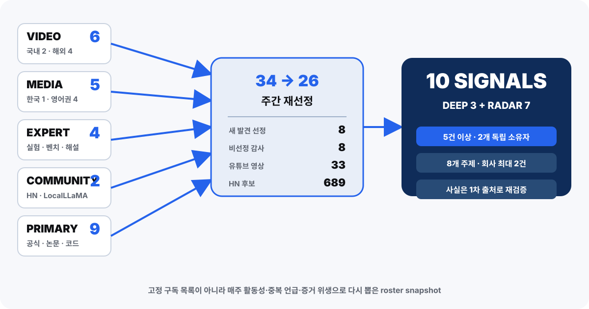
정책: 선택 소스 20–40개, 회전 소스 최소 8개, 신규 발견 최소 6개, 한 소유자 최대 2개. X는 로그인 없이 확인 가능한 범위만 사용하며 이번 호 선정에는 필요하지 않았다.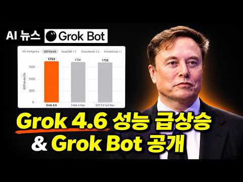
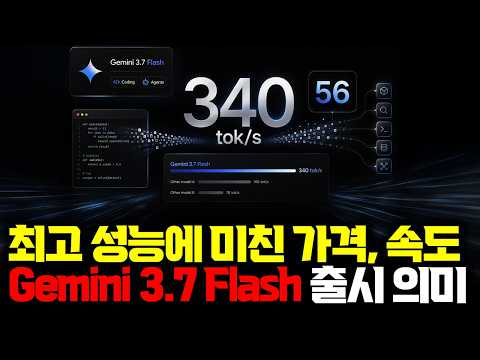
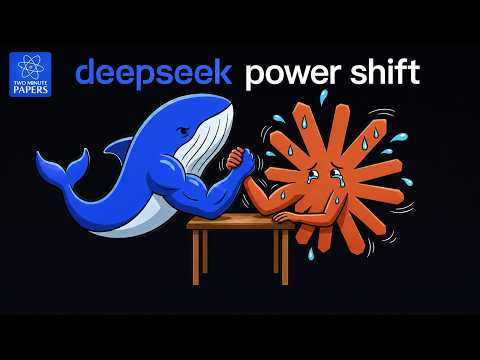
선정은 인기 점수가 아니라 증거가 있는 사건 단위다
YouTube 조회수와 HN 점수는 “어디를 깊게 볼지” 정하는 주의 신호다. 사실을 확정하는 표는 아니다. 영상 여러 개가 같은 주장을 반복하면 공통 원천을 찾고, 모델 카드·논문·코드·IR 발표 같은 1차 출처로 조건을 고정한다. 영향 25, 근거 20, AIML Quant 연관성 20, 기술 깊이 15, 새로움 10, 반응 10으로 점수화하되, 서로 다른 조건의 수치를 억지로 정규화하지 않는다.
| 단계 | 보는 것 | 남기는 산출물 | 실패 방지 |
|---|---|---|---|
| 발견 | 이번 주 새 채널·교차 언급 | source-roster.jsonl | 고정 소스 편향 |
| 수집 | 영상·HN·공식·미디어 | raw manifest·관측 시각 | 나중에 바뀐 수치 혼입 |
| 클러스터 | 같은 사건의 반복 보도 | candidates.jsonl | 한 발표를 여러 뉴스로 부풀림 |
| 검증 | 사실·조건·미공개 범위 | claims.jsonl·research notes | 인기도를 진실로 오해 |
속도가 모델의 새로운 등급이 되다
Gemini 3.7 Flash와 GPT-5.6 Sol Ultrafast는 ‘얼마나 맞히는가’와 함께 ‘얼마나 빨리 일이 진행되는가’를 전면에 세웠다. 다만 공개 수치는 측정 조건이 달라 직접 승부표가 아니다.
Google 모델 카드는 Gemini 3.7 Flash를 1M 토큰 입력과 64K 출력, 도구 사용과 멀티모달을 포함한 고속 모델로 설명한다. Artificial Analysis의 관측값은 약 389.5 token/s였다. OpenAI는 Cerebras 기반 GPT-5.6 Sol Ultrafast 프리뷰에서 최대 750 token/s, 기존 대비 최대 14배를 제시했다. 후자는 제한 프리뷰이며 모든 API 요청의 보장치가 아니다.
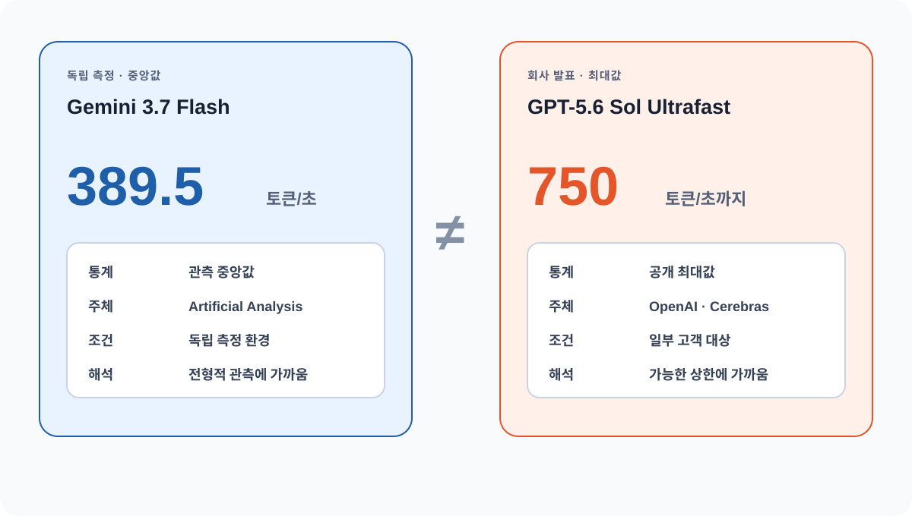
389.5는 독립 관측의 중앙 속도, 750은 공급자가 공개한 최대 속도다. 하드웨어·출력 길이·부하가 다르므로 직접 벤치마크가 아니다.token/s가 빨라도 에이전트가 빨라지는 것은 아니다
작업 완료 시간은 요청 준비, 첫 토큰 대기, 생성, 도구 호출, 외부 시스템 대기, 사람 승인, 재시도로 나뉜다. 코딩처럼 긴 출력을 생성하는 작업에서는 token/s가 큰 레버다. 반면 브라우저 자동화나 결제처럼 도구와 승인 대기가 긴 작업에서는 모델 속도를 두 배로 해도 전체 시간은 거의 줄지 않을 수 있다.
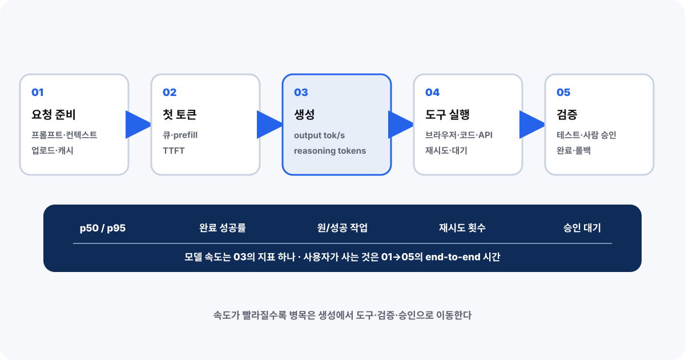
어느 구간이 병목인지 모르면 고속 모델 구매가 실제 처리량으로 이어지지 않는다.elapsed = completed_at - submitted_at
model_time = sum(c.output_tokens / c.tokens_per_second for c in calls)
tool_wait = sum(c.finished_at - c.started_at for c in tools)
approval_wait = sum(a.decided_at - a.requested_at for a in approvals)
retry_rate = failed_attempts / max(1, total_attempts)| 항목 | Gemini 3.7 Flash | GPT-5.6 Sol Ultrafast | 비교할 때 주의 |
|---|---|---|---|
| 공개 상태 | Gemini API 모델 | 제한 프리뷰 | 가용 범위가 다름 |
| 속도 신호 | AA median 389.5 tok/s | OpenAI 최대 750 tok/s | 관측 중앙값 vs 공급자 최대값 |
| 구매 판단 | 업무별 완료시간·성공률·비용을 같은 하네스로 재측정 | token/s 단독 순위 금지 | |
모델 카드의 컨텍스트·가격, OpenAI의 최대 속도와 제한 프리뷰, 독립 관측 속도.
동일 하드웨어·출력 길이·부하에서의 정면 비교와 실제 조직 업무의 완료시간.
원문: Gemini 모델 카드 · OpenAI Ultrafast · Artificial Analysis · 안될공학
Grok Bot은 에이전트에게 전용 컴퓨터를 줬다
24시간 실행되는 로그인된 컴퓨터는 채팅보다 강력하다. 동시에 브라우저 세션, 자격증명, 파일, 메시지와 결제가 하나의 새로운 보안 경계가 된다.
SpaceXAI의 설명에서 Grok Bot은 자체 컴퓨터와 앱을 가진 에이전트다. 사용자는 작업을 맡기고, Bot은 여러 앱을 오가며 장시간 계속 실행한다. 베타는 SuperGrok Heavy, Cursor Ultra, Teams Premium 등 제한된 플랜에 제공된다. 크리에이터 데모는 쇼핑·조사·업무 자동화를 보여주지만, 장기간 신뢰성·오류 회복·팀 환경의 감사를 증명하는 독립 벤치마크는 아직 없다.
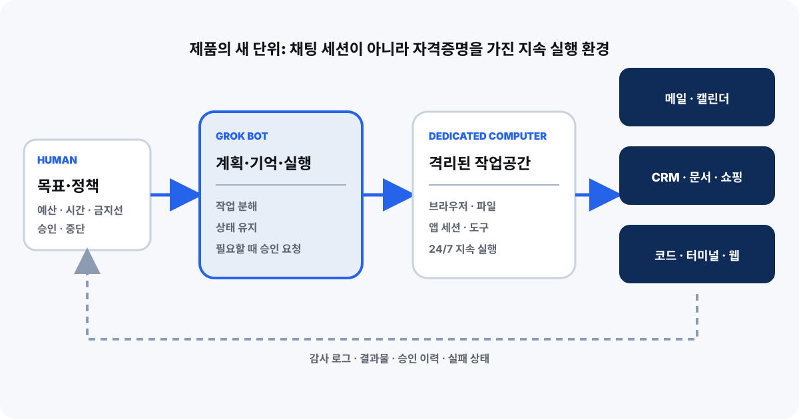
모델 호출보다 세션·파일·자격증명·네트워크·감사 로그의 수명이 길다.자율성보다 먼저 승인 표면을 설계한다
검색·요약은 자동으로 허용할 수 있지만 로그인, 전송, 게시, 구매, 삭제, 권한 변경은 금액·수신자·데이터 민감도에 따라 사람 승인이 필요하다. 승인 화면은 대상, 금액, 전송 데이터, 되돌릴 수 있는지, 직전 관찰을 함께 제시해야 한다.
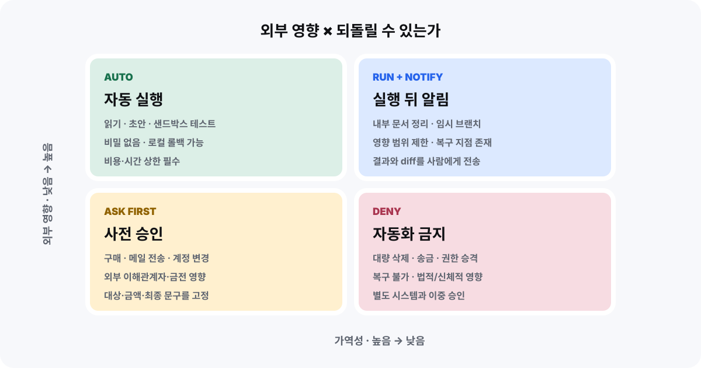
복구 가능성이 낮고 외부 영향이 클수록 승인 강도를 높인다.| 경계 | 기본값 | 승인 화면 | 로그 |
|---|---|---|---|
| 자격증명 | 앱별 단기·최소권한 | 계정·권한·만료 | 발급·사용·폐기 |
| 외부 전송 | 수신자 단위 승인 | 수신자·본문·첨부 | 최종 전송 원문 |
| 결제 | 금액·상점 한도 | 품목·총액·환불성 | 견적·승인·영수증 |
| 장기 실행 | 시간·비용 상한 | 목표·남은 예산 | 체크포인트·재시도 |
자체 컴퓨터·앱·장기 실행이라는 제품 형태와 베타 대상.
장기 성공률, 프롬프트 주입 방어, 자격증명 격리, 감사 로그, 결제 분쟁 처리.
Qwen 3.8 27B는 오픈 모델의 승부를 배포층으로 옮겼다
27B dense 멀티모달, 262K 기본 컨텍스트, Apache 2.0, vLLM·SGLang 호환이 한 묶음으로 나왔다. ‘다운로드 가능’보다 ‘우리 하드웨어에서 어떤 모드로 운영 가능한가’가 핵심이다.
공식 모델 카드는 텍스트·이미지 입력, 262,144 토큰의 기본 컨텍스트, reasoning effort 조절, vLLM과 SGLang 예시를 제공한다. Simon Willison은 17GB Q4 양자화를 128GB M5와 DGX에서 시험했다. xhigh 추론은 21분과 22,276개의 reasoning token을 썼고, reasoning을 끄면 137초로 줄었다. 이것은 특정 양자화·프롬프트·하드웨어의 관찰이며 일반 벤치마크가 아니다.
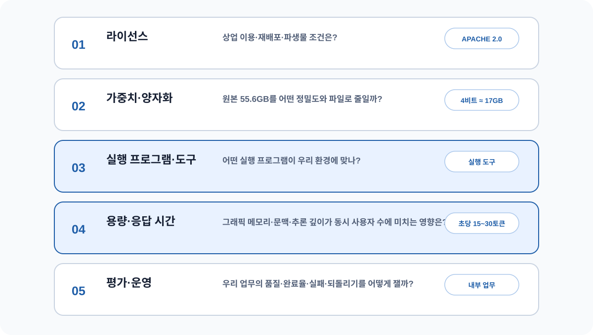
가중치 공개만으로 운영 가능성이 보장되지 않는다.vllm serve Qwen/Qwen3.8-27B \
--tensor-parallel-size 2 \
--max-model-len 32768
for effort in none low high xhigh; do
run_eval --model qwen3.8-27b --reasoning "$effort" --task internal-agent-set
done| 모드 | 관측 예시 | 얻는 것 | 운영 위험 |
|---|---|---|---|
| xhigh | 21분 · reasoning 22,276 tokens | 복잡한 탐색 여지 | 지연·비용 폭증 |
| off | 137초 | 빠른 응답 | 복잡 문제 성능 저하 가능 |
| Q4 | 약 17GB 파일 | 로컬 실험 접근성 | 정밀도 손실·런타임 편차 |
| 장문 | 262K native | 큰 작업 문맥 | KV cache·회상 검증 |
Hugging Face는 모델 저장소 243만→296만, 데이터셋 71.1만→100만, Spaces 100만→144만으로 생태계가 커졌다고 집계한다. 그러나 관심과 실제 채택은 다르다. 기반 모델 라이선스, 계보, 런타임 지원, 조직 내부 평가가 맞물릴 때 비로소 전환 비용을 낮출 수 있다.
모델 크기·라이선스·컨텍스트·공식 런타임 예시와 공개 로컬 실험.
우리 데이터의 품질, 양자화 손실, 동시성·메모리, 장문 회상, 도구 성공률.
DeepSeek V4 Pro는 모델과 서빙기를 함께 설계했다
DSpark의 target-attached speculative decoding은 다음 토큰 후보를 더 싸게 만들고 본 모델로 검증하는 서빙 최적화다. 공개 모델이어도 공식 예시는 4×GB300이다.
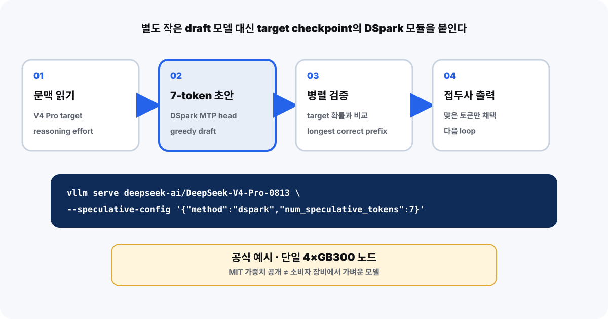
본 모델 검증을 통과한 토큰만 확정한다.vllm serve deepseek-ai/DeepSeek-V4-Pro-0813 --tensor-parallel-size 4
# throughput, p95 latency, acceptance rate, power를 같은 부하에서 측정Claude 연구 산출물이 제타 영점의 무조건 하한을 2/3로 밀었다
Anthropic 논문은 임계선 위 단순 영점의 비율 하한을 이전 5/12에서 2/3 이상으로 높였다고 주장한다. Lean 4 산출물도 공개됐다. 제목의 숫자 67.2%는 Montgomery–Taylor 상수 0.67250과 연결되지만, “리만 가설의 67%를 풀었다”는 뜻이 아니다. 리만 가설은 모든 비자명 영점이 임계선 위에 있다는 명제다.
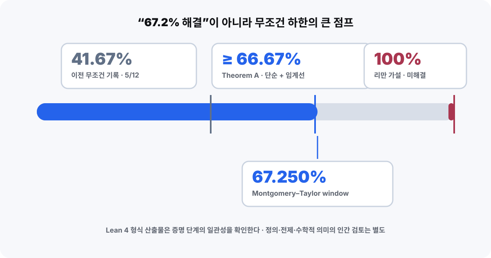
새 하한과 리만 가설 사이에는 여전히 큰 논리적 간극이 있다.Claude 워터마크는 저자 판정기가 아니다
Anthropic은 비밀 키와 앞선 단어로 의미 차이가 작은 다음 단어 선택에 통계적 편향을 주는 텍스트 워터마크를 설명했다. 긴 출력에서 Claude 관여 가능성을 찾는 보조 신호지만 숨은 문자·사용자 ID가 아니다. 짧은 글, 정답 제약이 큰 코드와 사실, 번역·재작성에는 신호가 약해질 수 있다.
 양성은 Claude 관여 가능성을 높일 뿐 저자·진실·부정행위를 증명하지 않는다.
양성은 Claude 관여 가능성을 높일 뿐 저자·진실·부정행위를 증명하지 않는다.| 관찰 | 말할 수 있음 | 말하면 안 됨 |
|---|---|---|
| 긴 글·강한 양성 | Claude 관여 가능성 증가 | 특정 저자·내용의 진실 |
| 짧은 글·음성 | 판정 정보 부족 | AI 미사용 확정 |
| 재작성 뒤 음성 | 신호 제거 가능 | 처음부터 AI 미관여 |
AMIE는 영상 상담의 실시간 대화와 깊은 추론을 분리했다
Google Research는 100개 시나리오, 300회의 라이브 모의 상담, 30명의 일차진료의를 포함한 연구에서 비동기 다중 에이전트 구조를 평가했다. 한 에이전트가 환자와 실시간으로 대화하는 동안 다른 에이전트들이 기록·영상·추론을 병렬로 검토하고 결과를 합친다. 핵심은 모델 수보다 서로 다른 지연 예산의 분리다.
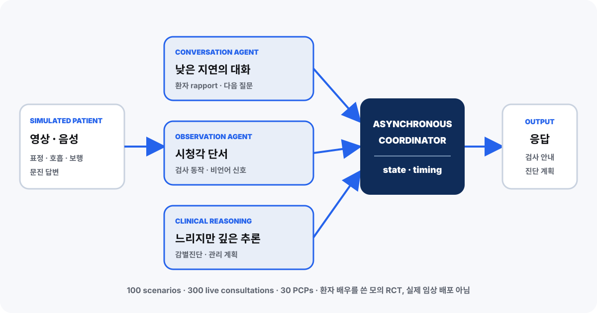
모의 환자 배우를 사용한 연구다. 실제 환자 배포와 안전성을 입증한 임상 시험이 아니다.정해진 모의 상담에서 비교 평가한 오디오·비주얼 상담 성능.
실제 진료 현장의 환자 안전, 희귀 질환, 책임 주체, 개인정보 운영.
기업 AI의 단위가 답변에서 위임으로 바뀌고 있다
OpenAI의 고객 데이터에서는 Codex가 결합 출력 토큰의 64%를 차지했고, 프런티어 사용 기업과 전형적 기업의 사용 격차는 2026년 1월 2.6배에서 8.3배로 커졌다고 한다. 법무 주간 사용자 108배, 영업·채용 41배 같은 증가율도 제시됐다. 모두 공급자 고객군의 관찰이며 전체 기업 시장의 인과 추정이 아니다.
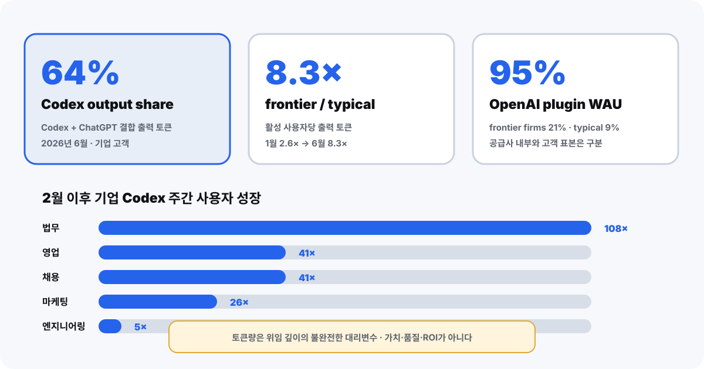
토큰은 위임 깊이의 불완전한 대리변수다. 승인 결과, 재작업, 오류 비용을 붙여야 한다.GPU는 장비에서 장기 금융 자산으로 이동하고 있다
NVIDIA와 Apollo, BlackRock, Blackstone, Brookfield, Goldman Sachs, KKR는 AI 인프라를 위한 금융 플랫폼을 만들고 장기간 5,000억 달러 이상의 제3자 자본을 동원하겠다고 발표했다. 이 숫자는 지금 집행된 투자도, 확보된 매출도, NVIDIA의 보증액도 아니다. 전력·부지·GPU·고객 계약을 금융 가능한 현금흐름 묶음으로 바꾸려는 목표액이다.
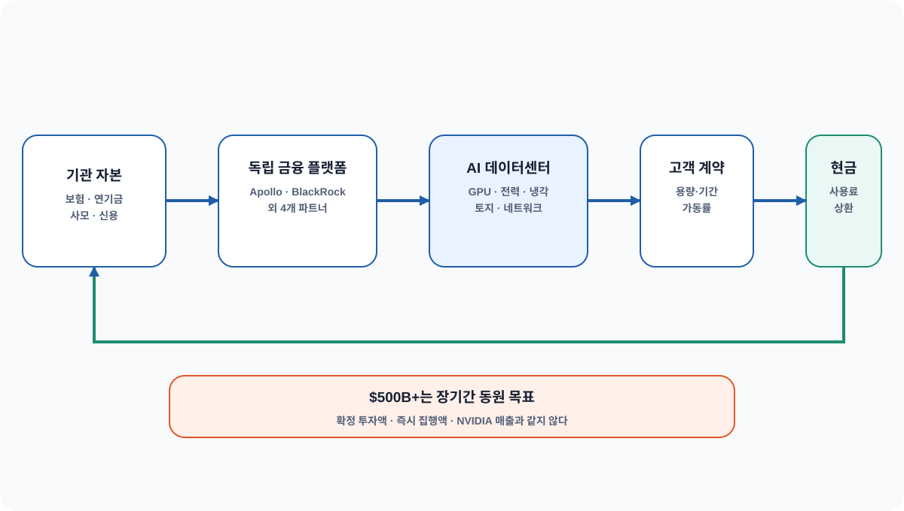
목표액을 확정 자금·매출로 읽지 않는다.| 발표 문구 | 뜻 | 뜻하지 않는 것 |
|---|---|---|
| over $500B | 시간을 두고 동원할 목표 | 즉시 집행된 현금 |
| third-party capital | 외부 투자자 자본 | NVIDIA 단독 투자 |
| AI factory | 컴퓨트·전력·시설의 묶음 | GPU만의 가치 |
AirTag가 AI 학습 데이터의 물리적 공급망을 드러냈다
404 Media는 희귀 서적 약 1,000권 주문에 AirTag를 넣어 배송 경로를 추적했고, 물품이 Amazon VGT3 시설에 도착했다고 보도했다. 현장 관계자 증언은 제본을 제거하고 스캔한 뒤 책을 폐기하는 공정을 설명했다. 이 탐사는 특정 주문과 시설의 흐름을 강하게 보여주지만, 어떤 모델에 어떤 텍스트가 얼마나 사용됐는지, 권리 처리가 어떻게 됐는지는 공개되지 않았다.
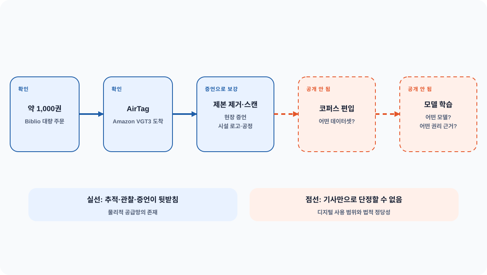
주문→시설→스캔 공정은 탐사와 증언으로 뒷받침된다. 데이터셋 편입·모델 학습·권리 근거는 공개되지 않아 점선으로 분리했다.웹 크롤링 정책만으로 데이터 거버넌스가 끝나지 않는다. 구매·배송·스캔·OCR·중복 제거·라이선스·삭제 요청까지 물리적·법적 계보를 하나의 원장으로 연결해야 한다.
이번 주에 팀으로 가져갈 네 가지 변경
완료시간을 분해한다
첫 토큰·생성·도구·승인·재시도를 분리해 기록하고 token/s가 실제 병목인지 확인한다.
에이전트 승인 표면을 그린다
읽기·초안·전송·결제·삭제·권한 변경을 복구 가능성과 외부 영향으로 나눈다.
오픈 모델을 스택으로 평가한다
라이선스·양자화·VRAM·런타임·컨텍스트·내부 태스크 품질을 같은 원장에 묶는다.
대리변수에 가치 지표를 붙인다
토큰·조회·자본 목표와 함께 완료율·재작업·오류 비용·가동률·권리 계보를 측정한다.
30분 스터디를 여는 세 질문
우리 에이전트 업무에서 모델 생성이 실제 병목인 구간은 어디인가?
전용 컴퓨터 에이전트가 전송·구매 전에 반드시 보여줘야 할 정보는 무엇인가?
오픈 모델의 운영 책임과 학습 데이터의 권리 계보를 누가 유지해야 하는가?
원문·코드·논문 원장
수집 시각은 2026년 8월 21일 09:53 KST다. 이미지 다섯 장은 공개 YouTube 썸네일을 해당 영상을 식별·비평하는 최소 범위로 사용했고, 나머지 구조도는 원문을 바탕으로 직접 작도했다. URL·관측 시각·선정/탈락 이유·주장별 조건은 비공개 raw 원장에 보존한다.
- [1]Google DeepMind — Gemini 3.7 Flash model card
- [2]OpenAI — Previewing Ultrafast
- [3]SpaceXAI — Introducing Grok Bot
- [4]Qwen — Qwen3.8-27B model card and code
- [5]DeepSeek — V4 Pro 0813 model card
- [6]Anthropic — Zeta zeros paper
- [7]Anthropic — zeta-23-lean
- [8]Anthropic — Claude text watermark
- [9]Google Research — AMIE audio-visual consultations
- [10]OpenAI — Enterprise Signals
- [11]NVIDIA — AI infrastructure financing platforms
- [12]404 Media — Rare books investigation
- [13]Hugging Face — State of Open Models, Summer 2026